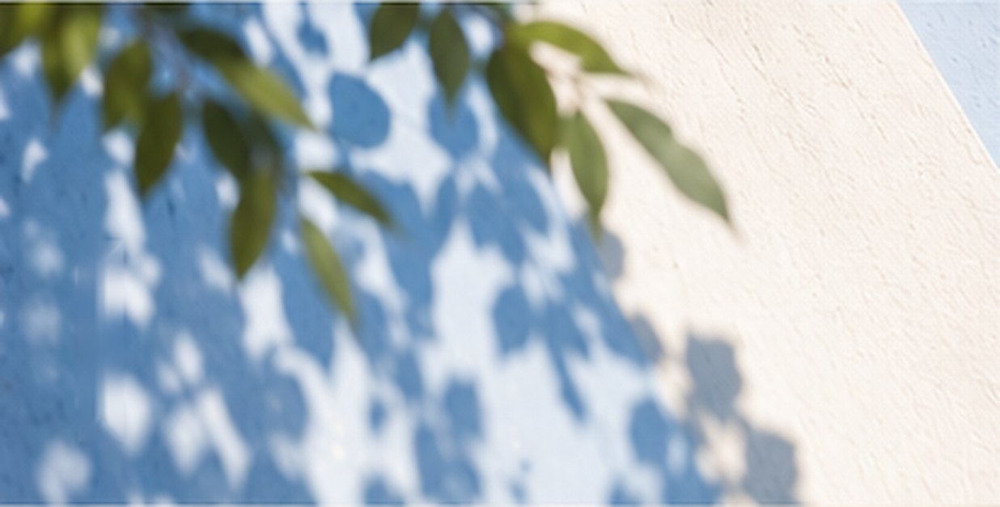

Malsum Forest · Essay
말씀의 숲
AI를 자동 응답기가 아닌
말씀 연구 환경으로

Essence
흩어진 자료를 건져 올리고, 질문의 순서를 세우며, 깊은 연구가 다시 강단과 공동체로 흘러가게 한 한 목회자의 기록입니다.
About This Book
AI를 자동 응답기가 아닌
말씀 연구 환경으로
이 책은 AI가 목회자를 대신하는 방법을 말하지 않습니다. 말씀 앞에 더 오래 머물기 위해 질문의 순서를 세우고, 흩어진 연구와 자료를 다시 연결하며, 깊은 연구가 설교와 교육과 공동체로 흘러가게 하는 과정을 기록합니다.
AI를 자동 응답기가 아니라 말씀 연구 환경으로 구축하여, 더 빨리 답을 얻기보다 더 깊이 묻고, 더 바르게 전하기 위한 한 목회자의 여정을 담았습니다.

- 01
질문의 순서
말씀 앞에 더 오래 머물기 위해 질문의 순서를 세우고,
- 02
흩어진 연구와 자료의 연결
흩어진 연구와 자료를 다시 연결하며,
- 03
설교·교육·공동체로 흘러가는 연구
깊은 연구가 설교와 교육과 공동체로 흘러가게 하는 과정을 기록합니다.
- 지은이
- 이승주
- 발행일
- 2026. 08. 14
- 발행처
- 퍼플
- 분량
- 86쪽
- 크기
- 152 × 225 mm
- ISBN
- 9788924246056
- 정가
- 12,000원
- 분야
- 종교 > 기독교(개신교)
- 제작 방식
- POD(주문 후 제작)
더 빨리 답을 얻기보다 더 깊이 묻고,
더 바르게 전하기 위한 한 목회자의 여정